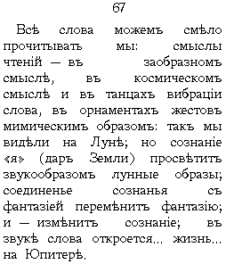
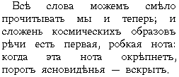
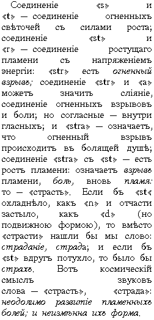
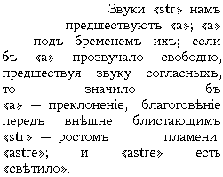
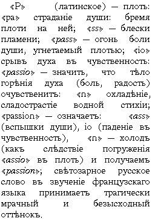

Glossolalia (Section 67)
GLOSSOLALIA

We are able to read all words boldly: the meanings of readings are -- in the trans-imagal meaning, in the cosmic meaning and in the dances of vibration of a word, in the patterns of gestures by mimical form: so did we view things on the Moon; but consciousness of the "I" (the gift of the Earth) illuminates the lunar images by means of the sound-image; the union of consciousness with phantasy will alter phantasy; and &emdash; it will amend consciousness; in the sound of the word will be revealed... life ... on Jupiter.

We can read all words boldly even now; and the composition of cosmic images of speech is the first, daring note: when this note strengthens, the threshold of clairvoyance -- will be revealed.

The union of "s" and "t" is -- a union of fiery luminaries with the forces of growth; the union of "st" and "r" is -- a union of growing flame with tension of energy: "str" is a fiery burst; the union of "str" and "a" can signify a confluence, a union of fiery bursts and pain; but the consonants are -- inside the vowels; and "stra" -- signifies, that the fiery burst is proceeding in a pained soul; the combination of "str" with "st" is the growth of a flame: it signifies a burst of flame, pain, again the flame: that is a "passionate struggle."[strast'] If "st" were to cool off, like "n" and partially congeal, like "d" (but in moveable form), then instead of "struggle" we would find the word: struggling [stradanie], strain [strada]; and if "st" was suddenly extinguished, then there would be "fear-struck" [strax]. Here is the cosmic meaning of the sounds of the Russian words for -- "struggle," "strain": the development of fiery pains is insurmountable; and their form is the immutable.

The sounds "str" precede for us "a"; "a" is -- beneath the burden of them; if "a" could sound freely, preceding the sound of the consonants, then "a" could signify -- admiration, veneration before the externally shining "str" -- before the growth of flame: "astre"; and "astre" is a "celestial star."

"P" the Latin one is -- the flesh: "pa" is the passion of the soul: the burden of flesh on it; "ss" are -- gleams of flame; "pass" is -- the fire of the pain of a soul, oppressed by the flesh; "io" is the disruption of the spirit into sensuality; "passio" -- signifies, that the body of the burning of the spirit (pain, joy) is consciously feeling: "n" is -- a cooling off, voluptuousness of the watery element; "passion" -- signifies "ass" (the flash of the soul), io (the fall into sensuality), "n" is -- cold (as a consequence of the immersion of "assio" into the flesh) and we receive "passion"; the dawn's-early-light of the Russian word takes on in the sound of the French language a tragically murky and inescapable tint.